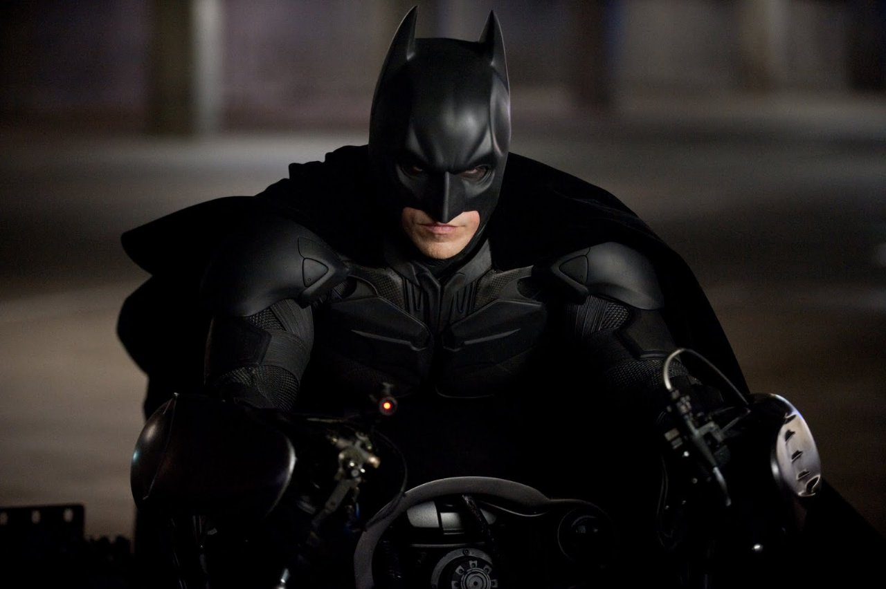

Batman
"It's not who I am underneath, but what I do that defines me."

Dent
"You either die a hero or you live long enough to see yourself become the villain."
Alfred
"Why do we fall sir? So we might learn to pick ourselves up."
RasAlGul
Ra's al Ghul is an international terrorist and assassin whose ultimate goal is a world in perfect environmental balance. He believes that the best method by which this can be achieved is to eliminate most of humanity. Ra's usually tries to assault the world's human populace with a biological weapon, such as a genetically-engineered virus. He is aided in this quest by the Lazarus Pits, reservoirs of rejuvenating chemicals that restore the dying to life; these pits have granted him a lifespan of several hundred years.
Joker
The Joker is a fictional supervillain from American comic book publisher DC Comics who was portrayed by late Australian actor Heath Ledger in Christopher Nolan's 2008 superhero film The Dark Knight. Ledger's interpretation of the character is specifically influenced by the graphic novels Batman: The Killing Joke and Arkham Asylum: A Serious House on Serious Earth. In the film, he wears the character's traditional color palette, while his facial appearance includes clown makeup that covers facial scars of a Glasgow smile.
Bane
A mysterious and physically imposing revolutionary who was excommunicated from the League of Shadows and portrays himself as a "liberator of pain". He is desperate to continue Ra's al Ghul's legacy by destroying Gotham. The character was chosen by Christopher Nolan because of his desire to see Batman tested on both a physical and mental level.[6][20] According to costume designer Lindy Hemming, the character wears a mask that supplies him with an analgesic gas to relieve pain he suffers from an injury sustained.
Alfred Pennyworth
Alfred Thaddeus Crane Pennyworth is a fictional character appearing in American comic books published by DC Comics, most commonly in association with Batman. Pennyworth is depicted as Bruce Wayne's loyal and tireless butler, legal guardian, best friend, aide-de-camp, and surrogate father figure following the murders of Thomas and Martha Wayne. As an ex-Special Air Service operative of honor and ethics with connections within the intelligence community, he has been called "Batman's batman".[1][2][3] He also provides comic relief, as his sarcastic and cynical attitude often adds humor to dialogue between himself and Batman. A vital part of the Batman mythos, Alfred was nominated for the Wizard Fan Award for Favorite Supporting Male Character in 1994. In non-comics media, the character has been portrayed by noted actors William Austin, Eric Wilton, Michael Gough, Michael Caine, and Jeremy Irons on film and by Alan Napier, Efrem Zimbalist, Jr., Ian Abercrombie, David McCallum, and Sean Pertwee on television.
Tabbable Content
Bruce Wayne
Batman is a fictional superhero appearing in American comic books published by DC Comics. The character was created by artist Bob Kane and writer Bill Finger,[4][5] and first appeared in Detective Comics #27 (1939). Originally named the "Bat-Man", the character is also referred to by such epithets as the Caped Crusader, the Dark Knight, and the World's Greatest Detective.[6]Batman's secret identity is Bruce Wayne, an American billionaire, playboy, philanthropist, and owner of Wayne Enterprises. After witnessing the murder of his parents Thomas Wayne and Martha Wayne as a child, he swore vengeance against criminals, an oath tempered by a sense of justice. Wayne trains himself physically and intellectually and crafts a bat-inspired persona to fight crime.[7] Batman operates in the fictional Gotham City, with assistance from various supporting characters, including his butler Alfred, police commissioner Gordon, and vigilante allies such as Robin. Unlike most superheroes, Batman does not possess any superpowers; rather, he relies on his genius intellect, physical prowess, martial arts abilities, detective skills, science and technology, vast wealth, intimidation, and indomitable will. A large assortment of villains make up Batman's rogues gallery, including his archenemy, the Joker.Batman became popular soon after his introduction in 1939 and gained his own comic book title, Batman, the following year. As the decades went on, differing interpretations of the character emerged. The late 1960s Batman television series used a camp aesthetic, which continued to be associated with the character for years after the show ended. Various creators worked to return the character to his dark roots, culminating in 1986 with The Dark Knight Returns by Frank Miller. The success of Warner Bros.' live-action Batman feature films have helped maintain the public's interest in the character.
Batman
Batman is a fictional superhero appearing in American comic books published by DC Comics. The character was created by artist Bob Kane and writer Bill Finger,[4][5] and first appeared in Detective Comics #27 (1939). Originally named the "Bat-Man", the character is also referred to by such epithets as the Caped Crusader, the Dark Knight, and the World's Greatest Detective.[6]Batman's secret identity is Bruce Wayne, an American billionaire, playboy, philanthropist, and owner of Wayne Enterprises. After witnessing the murder of his parents Thomas Wayne and Martha Wayne as a child, he swore vengeance against criminals, an oath tempered by a sense of justice. Wayne trains himself physically and intellectually and crafts a bat-inspired persona to fight crime.[7] Batman operates in the fictional Gotham City, with assistance from various supporting characters, including his butler Alfred, police commissioner Gordon, and vigilante allies such as Robin. Unlike most superheroes, Batman does not possess any superpowers; rather, he relies on his genius intellect, physical prowess, martial arts abilities, detective skills, science and technology, vast wealth, intimidation, and indomitable will. A large assortment of villains make up Batman's rogues gallery, including his archenemy, the Joker.Batman became popular soon after his introduction in 1939 and gained his own comic book title, Batman, the following year. As the decades went on, differing interpretations of the character emerged. The late 1960s Batman television series used a camp aesthetic, which continued to be associated with the character for years after the show ended. Various creators worked to return the character to his dark roots, culminating in 1986 with The Dark Knight Returns by Frank Miller. The success of Warner Bros.' live-action Batman feature films have helped maintain the public's interest in the character.